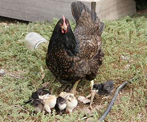

🔠Are you tokking to me? ğŸ£

Barnevelder
De barnevelder is een middelzwaar kippenras dat zijn oorsprong
heeft in het Nederlandse Barneveld. Het ras ontstond door het
inkruisen van legkippen met grote Aziatische kippenrassen, naar
verluidt Cochins, Croad Langshans en Brahma's. Vanaf begin jaren
1920 werden de eerste dieren geëxporteerd naar Engeland.
Lees verder >
Hollands hoen
Het Hollands hoen is een oud kippenras, dat in drie onderrassen
opgedeeld is en gedeeltelijk in Nederland, Groot-Brittannië en
Duitsland ontstaan is. Er bestaat ook een krielvariant.
Lees verder >
Leghorn
De leghorn werd al aan het begin van de jaartelling door de
Romeinse schrijvers Marcus Terentius Varro Reatinus en Columella
beschreven. Rond 1835 werden deze patrijskleurige hoenders via
Livorno naar Amerika verscheept. Later zijn er nog diverse
ladingen van witte hoenders uit Italië in Amerika aangekomen, die
in Amerika zijn gefokt tot een specifiek legras.
Lees verder >